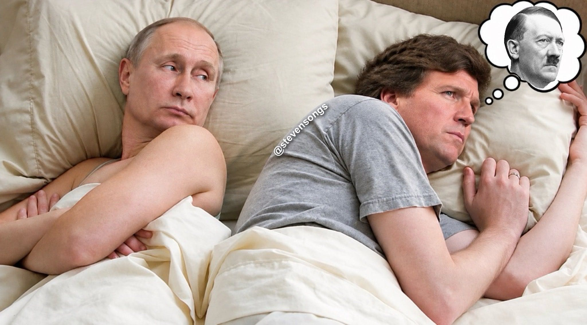

Silah olarak soru
Bugün en etkili dezenformasyon yalan değildir. Sorudur.
Şubat 2024'te Kremlin'e konuk olan Tucker Carlson, Vladimir Putin'i sözünü hiç kesmeden dinledi. Rus liderin anlattığına göre Polonya 1939'da "işbirliğine yanaşmamış", Hitler'e de başka seçenek bırakmamış. Yedi ay sonra Carlson, podcast yayıncısı Darryl Cooper'la yaptığı söyleşiyi tanıtırken konuğunun belki de "Amerika Birleşik Devletleri'nin en iyi ve en dürüst popüler tarihçisi" olduğunu söyledi. Cooper'ın tezine göre İkinci Dünya Savaşı'nın baş kötüsü Hitler değil, Churchill'di.
İkisinin de Hitler'i haklı çıkarmasına gerek yoktu. Meselenin hâlâ tartışmaya açık olduğu hissini uyandırmaları yeterliydi. Suçlu Polonya mıydı? Asıl savaş kışkırtıcısı Churchill miydi? Nazi Almanyası'nı yenmeye değer miydi ki?
Soru sormak bedavadır, cevaplamaksa pahalıya patlar. Soruyu soran ne bir görüşü savunmak ne de kanıt göstermek zorundadır; yanılması da mümkün değildir. Kremlin röportajından sonra Polonya Dışişleri Bakanlığı, Putin'in tarih dersini düzelten on maddelik bir açıklama yayımlamak zorunda kaldı. Soru saniyeler sürdü. Cevap için koca bir bakanlık gerekti.
Hiçbir şey doğru değilse
Gerçek tarih karmaşıktır, dürüst tarihçiler de bunu saklamaz. İki savaş arası dönemde Polonya hükümetleri ciddi hatalar yaptı. İngiltere ve Fransa yıllarca Hitler'e taviz verdi. Versay Antlaşması geride acı bir miras bıraktı. Mirasçısı bugün dünyaya 1939 üzerine ders veren Sovyetler Birliği ise o yılın ağustosunda Hitler'le bir pakt imzaladı; paktın Polonya'yı iki ülke arasında paylaştıran gizli bir protokolü de vardı. Almanya Polonya'ya batıdan girdikten on altı gün sonra Sovyetler de doğudan saldırdı. Putin bu kısmı atladı.
Ama bunların hiçbiri özü değiştirmiyor. Nazi Almanyası Polonya'yı devlet olarak haritadan silmek için işgal etti. Polonya Yahudilerini yok etmeyi, Slav nüfusunu boyunduruk altına almayı planladı ve bütün bir kıtaya yayılan soykırımcı bir imparatorluk kurdu. Kenarlardaki karmaşıklık, merkezdeki gerçeği pazarlığa açmaz.
Ne var ki kesinleşmiş her olgu yeniden tartışmaya açılınca ahlaki harita tersyüz olur. Saldırgan kurban, kurban da kışkırtıcı olur. Diktatörler yanlış anlaşılmış devlet adamlarına, kendini savunan demokrasiler savaş çığırtkanlarına dönüşür. 1939'un faturasını Polonya'ya kesen mantık, 2022'nin faturasını Ukrayna'ya kesen mantığın ta kendisidir.
Bu mantığı sonuna kadar götürürseniz geriye tarih diye bir şey kalmaz, yalnızca birbiriyle yarışan anlatılar kalır. Ortak bir hakikatin olmadığı dünya ise kimin gücü daha fazlaysa onundur. Batı'nın düşmanları da tam olarak böyle bir dünya istiyor, çünkü ancak orada kazanabilirler.
Tek kalıp, çok hedef
Bu hamleyi bir kez fark ettiniz mi, artık her yerde görürsünüz. Aşılar insanlığın en büyük başarılarından biri mi, yoksa bizi sessiz sedasız öldürüyorlar mı? Bilim dünyayı anlamak için elimizdeki en iyi yöntem mi, yoksa ilaç şirketleri hesabına çevrilen bir dolap mı? Liberal demokrasi özgürlüğün güvencesi mi, yoksa kılık değiştirmiş sosyalizm mi? Kapitalizm eşi benzeri görülmemiş bir refah mı yarattı, yoksa herkesin gitgide yoksullaşmasının sebebi mi?
Bu soruların hiçbiri cevap almak için sorulmaz. Her biri, kanıtların desteklemediği bir şüphe tohumu eker. Hedef başka bir sonuca varmak değil, sonuç diye bir şeyi ortadan kaldırmaktır.
Bunları şüpheciliğe karşı çıkmak için söylemiyorum. Kurumlar mercek altına alınmayı hak eder; başarısız olduklarında da güvensizliği kendileri davet eder. Herkes daha muhafazakâr, daha popülist ya da otoriteye karşı daha kuşkucu olmakta özgürdür. Asıl tehlike başka: Toplum olarak kanıtı tartma, olguyu asılsız iddiadan ayırt etme yetimiz bile bile yok ediliyor.
Eski taktikler, yeni haberciler
Bunların hiçbiri yeni değil; yeni olan yalnızca dağıtım kanalı. 1983'te Yeni Delhi'de çıkan Sovyet yanlısı Patriot gazetesinde imzasız bir mektup yayımlandı. Mektuba göre AIDS'i ABD ordusu üretmişti. Mektubu gazeteye KGB yerleştirmişti. İki yıl sonra Sovyet basını iddiayı yeniden canlandırıp Fort Detrick'teki gerçek bir ordu laboratuvarına bağladı; hikâye böylece bütün dünyayı dolaştı. Bugün bile onun şu ya da bu versiyonuna inananlar var.
New York Times Opinion'ın Operation InfeKtion dizisi bu kampanyanın izini adım adım sürüyor ve yöntemini yedi kurala indiriyor: Çatlakları bul, büyük bir yalan uydur, yalanı bir gerçek kırıntısının etrafına ör, elini belli etme, kullanışlı bir aptal bul, her şeyi inkâr et, uzun vadeli oyna. Vladimir Putin o yıllarda KGB subayıydı.
Bugün bu taktiklerin büyük yalana neredeyse ihtiyacı kalmadı. İşi soru görüyor, sosyal medya onu yayıyor, kullanışlı aptal da milyonlarca kişilik izleyici kitlesiyle çıkageliyor. Moskova röportajından sonra Polonya Meclis Başkanı da Carlson için tam olarak bu ifadeyi kullandı.
Bu habercilerin bazıları para alıyor. 2024'te ABD Adalet Bakanlığı, Rusya'nın devlet yayın kuruluşu RT'nin iki çalışanını Tennessee'deki bir şirkete gizlice yaklaşık 10 milyon dolar aktarmakla suçladı. Bu şirket popüler Amerikalı yorumcuları işe almıştı; yorumcular paranın nereden geldiğini bilmediklerini söylüyor. Ama habercilerin çoğu tek kuruş almıyor ve samimiyetleri onları daha az değil, daha çok kullanışlı kılıyor.
Rusya'nın Amerika'yı fethetmesi, hatta Amerikalılara kendini beğendirmesi bile gerekmiyor. Amerikalıların, ülkelerindeki bilimin, seçimlerin, basının ve tıbbın baştan sona birer sahtekârlık olduğuna ve hiçbir kurumun bir Telegram kanalından daha fazla güveni hak etmediğine inanması yeterli. Amaç insanları tek bir yalana inandırmak değil. Onları hiçbir şeye inanamayacak noktaya getirmek.
Rus bilgi savaşı ile çağımızın radikal düzen karşıtı hareketleri, işte bu yüzden hiçbir koordinasyona gerek duymadan birbirini güçlendiriyor. Bu hareketlerin sesi bugün en çok popülist sağdan yükseliyor, ama solda da karşılıkları var. İki tarafın mesajları kendiliğinden aynı noktada buluşuyor: Her kurum çürümüştür, uzmanlık yozlaşmışlığın kanıtıdır, alternatif ne kadar uçuksa ona inanan da o kadar cesurdur.
Bana kalırsa Amerika, kendimi bildim bileli hiç bu kadar dağılmaya yakın olmamıştı ve bunda bu kampanyanın büyük payı var. Sırada, aşırı sağla dezenformasyonun şimdiden birbirini beslediği Avrupa olabilir.
Uğruna savaştığımız şey
"Batı" derken bir ırkı ya da coğrafyayı değil, bir dizi kurumu kastediyorum. Bu düzende güçlü iddialar güçlü kanıt ister, asılsız iddialar saygıyı değil küçümsemeyi hak eder ve tek bir deney en saygın otoriteyi bile devirebilir. Herkes mutluluğu kendi bildiği yoldan aramakta özgürdür ve ürettiğinin sahibi kendisidir. Liderler iç savaş çıkmadan görevden indirilebilir. İnsanların hakları yöneticinin keyfine bağlı değildir ve vatandaşlar hükümeti korkmadan eleştirebilir.
Bu kurumların dayandığı fikirlere pek çok medeniyet katkı yaptı. Japonya, Güney Kore ve Tayvan zamanla bu kurumları tümüyle sahiplendi; Çin ise onların bilimsel ve ekonomik motorunu göz kamaştırıcı bir başarıyla kendi hizmetine koştu. Ama sistem ilk ve en güçlü biçimde Batı'da kök saldı ve insan hayatını baştan aşağı değiştirdi. 1800'de dünyanın hiçbir bölgesinde beklenen yaşam süresi 40 yılı aşmıyordu. 2021'de dünya ortalaması 71 yıldı.
Batı'yı kötü adam, Doğu'yu kurban ilan eden moda anlatı da bu yüzden neredeyse gülünç ölçüde basit kalıyor. Memleketim Türkiye gibi üçüncü dünya ülkeleri, siyasetleri bu medeniyetin değerlerine sırt çevirse bile ondan muazzam ölçüde yararlanıyor. Modern uçaklarla uçan, enfeksiyonları antibiyotikle tedavi eden, küresel piyasalarda ticaret yapan her toplum da öyle. Gelişmekte olan dünyanın büyük kısmı, insanlığın yaşam koşullarını iyileştirmek için Batı'nın yürüttüğü uzun soluklu projenin bedavacısı oldu.
Batı korkunç suçlar işledi: sömürgecilik, kölelik, fetih savaşları, ırkçılık. Ama yine Batı'nın liberal geleneği, bu suçların adını koyacak ve onlarla mücadele edecek araçları da üretti: evrensel haklar, yasa önünde eşitlik, ifade özgürlüğü ve iktidarın kendini gerekçelendirmek zorunda olduğu ilkesi. Batı'nın ikiyüzlülüğüne verilecek cevap, ilkelerini yıkmak değil, Batı'yı o ilkelerle hesaba çekmektir.
Bu kazanımlar bir kez yitirildi mi, kendiliğinden geri gelmez. Medeniyetler geriye de gidebilir; bunun neye benzediğini tarih bize açıkça gösteriyor. Roma, en parlak döneminde taş döşeli yolların, su kemerlerinin, ortak paranın, yazılı hukukun ve uzun mesafeli ticaretin hüküm sürdüğü bir dünyanın merkeziydi. Beşinci yüzyılda Batı Roma İmparatorluğu çökünce bunların çoğu birkaç kuşak içinde ortadan kalktı. Roma kenti eski büyüklüğünün cüzi bir kısmına geriledi. Britanya'da insanlar seri üretim çanak çömleği ve kiremit çatıları bırakıp el yapımı kil kaplara ve saz damlara döndü. Okuryazarlık, ticaret ve hukukun üstünlüğü buharlaşıp gitti.
Bilgi birikimi Konstantinopolis'te ve İslam dünyasında varlığını sürdürdü; ama Batı Avrupa'nın kaybettiklerini geri kazanması ve sonunda onları aşması için, Rönesans'ı ve Bilimsel Devrim'i de içine alan yaklaşık bin yıl gerekti. Aydınlanma insanlığın doğal hali değildir. Zorlukla kazanılmış bir istisnadır ve istisnalar tersine dönebilir.
Geriye giden yollar hâlâ açık ve her sahte soru bizi bunlardan birine doğru itiyor:
- Krallıklara dönüş. Toplum hükümdarın etrafında yeniden örgütlenir, kurumlar onun aleti olur, sadakat liyakatin önüne geçer.
- Bilimden kopuş. Kanıt, siyasi bir kimlik rozetine dönüşür; batıl inanç tıpla, komplo uzmanlıkla, anekdot istatistikle yarışır.
- Hakların sonu. Devlete karşı bir güvence kalmayınca özgürlük, hükümdarın izin verdiği kadarına iner; insanlar kendileri için değil, tepedeki adam için çalışır.
Bayraklara değil, değerlere sadakat
Batı uğruna savaşmaya değerse, bunun nedeni bayrakları, sınırları ya da liderleri değil. Asıl neden, Aydınlanma'nın ortaya koyduğu ve Batı'nın eksiğiyle gediğiyle kurumlarına işlediği bir avuç ilkedir: İddialar kanıtın sınavından geçmelidir. Her insanın, hiçbir yöneticinin elinden alamayacağı hakları vardır. İktidar vatandaşların emanetidir ve istendiğinde sahibine iade edilmelidir.
Bu ilkeler bir Kutup Yıldızı'dır. Denizciler Kutup Yıldızı'na hiçbir zaman varmaz; ona bakarak yön bulurlar. Hiçbir toplum Aydınlanma ideallerinin hakkını tam olarak veremedi, ama bu idealler bize hangi yönün ileri olduğunu ve ne zaman rotadan saptığımızı gösterir. Bu da onları her türlü bayraktan ya da politikacıdan kıyaslanamayacak kadar güvenilir kılar. Hükümetler değişir, partiler yükselip düşer, uluslar savrulur. İlkeler kalır.
Bu yüzden bir medeniyete sadakat, hiçbir zaman başında kim varsa ona körü körüne itaat etmek demek olamaz. Savunmaya değer bir sistem asla tepedeki adama mutlak biat istemez; istediği anda çoktan başkalaşıp düşmana dönüşmüştür. Kutup Yıldızı'nı ölçüt alırsak, mahkemelere, basına ya da oyların dürüstçe sayılmasına saldıran bir Batılı lider de yabancı bir otokrat kadar kesin biçimde sınıfta kalır.
Aynı yıldıza göre yön bulduğumuzda, liberal demokrasiyle otoriter imparatorluk arasındaki tercih hiç de zor değil. İlkinde çocuklarım yanılabilir, sevilmeyebilir, birilerinin işine gelmeyebilir; yine de güvende olurlar. İkincisinde keyfi iktidarın insafına kalırlar. Bu, uğrunda mücadele etmeye değer bir dava. Mücadele de savaş meydanında değil, neyin doğru olduğuna nasıl karar verdiğimizde başlar.
Gerçek soru, sahte soru
Sorgulamak başlı başına bir Aydınlanma değeridir. Kant o çağı iki kelimeyle özetlemişti: sapere aude, yani bilmeye cesaret et, kendi aklını kullanmaya cesaret et. Bilim örgütlü şüphedir; özgür toplumlar da iktidarı sorgulamaktan çekinmeyen yurttaşlar sayesinde ayakta durur. Sahte soruyu bu kadar tehlikeli yapan da tam bu: Yok etmeye çalıştığı şeyin kılığına bürünüyor.
Farkı kanıt belirler. Gerçek soruyu soran, cevap almaya ve o cevap hoşuna gitmese bile kabullenmeye hazırdır. Sahte soru ise yalnızca sonsuza dek açık kalmak için vardır; verilerle değil, anekdotlarla ve sosyal medya paylaşımlarıyla savunulur. Aydınlanma bize her şeyden şüphe etmeyi öğretmedi. Hume'un deyişiyle: "Bilge kişi inancını kanıtlarla orantılı tutar." Şüphenin de hak edilmesi gerekir.
Çağımızın en derin çatışması ne Amerika ile Rusya ne de sağ ile sol arasındadır. Asıl çatışma, Aydınlanma'nın kazanmak için yola çıktığı o daha eski ve belirleyici savaştır: kanıtı manipülasyona, aklı da sinik bir teslimiyete karşı savunmak. Bu zafer kalıcı bir miras değildir. Her kuşak onu yeniden kazanmak zorundadır; kurumlara körü körüne inanarak değil, o kurumları inşa eden araçları titizlikle kullanarak. Nedir bu araçlar? Kanıt isteme cesareti, dürüst bir cevabı kabullenecek erdem ve kendi ideallerimizin bize karşı kullanıldığı anı fark edecek kararlılık.
Özgür toplumların düşebileceği en büyük hata, sonu gelmeyen temelsiz şüpheyi entelektüel titizlik sanmaktır. Kendimizi eleştirebilmek en büyük gücümüz; ama silaha dönüştürülmüş şüpheciliğin bütün ortak gerçekliği eritmesine göz yumarsak, ilerlemeyi mümkün kılan tek temeli kendi ellerimizle yıkmış oluruz. Verilmeye değer tek savaş, bu ortak ve kanıtlanabilir gerçekliği savunmaktır. Dünyaya soru sormayı öğreten medeniyet, soruları yalnızca silah olarak kullananlar karşısında ayakta kalamayacak.
Yorumlar